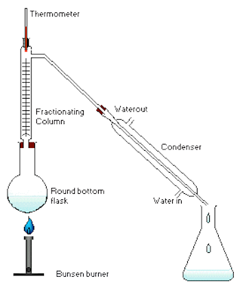

1. สมบัติของสาร
สมบัติของสาร หมายถึง ลักษณะเฉพาะตัวของสารที่สามารถบ่งบอกว่าสารชนิดนั้นคืออะไร สารแต่ละชนิดจะมีสมบัติของสารที่สังเกตได้ คือ สี กลิ่น รส สถานะ เนื้อสาร ถ้าต้องการตรวจสอบว่าของเหลวใส ไม่มีสี เป็นสารละลายน้ำตาลหรือสารละลายเกลือแกง ต้องทดสอบสมบัติเฉพาะตัวคือ รส หรือทดสอบการนำไฟฟ้า
|
สมบัติ
|
เครื่องมือที่ใช้หรือวิธีใช้ในการตรวจสอบ
|
1. การนำไฟฟ้า
2. การละลาย
3. ความเป็นกรด-เบส ของสาร
4. อุณหภูมิ
5. มวล
6. จุดหลอมเหลว
7. จุดเดือด
|
- ชุดเครื่องตรวจการนำไฟฟ้า
- นำไปละลายในตัวทำละลาย
- ใช้กระดาษลิตมัสทดสอบสารละลาย ถ้าเป็นของแข็งต้องละลายน้ำก่อน
ทดสอบด้วยกระดาษลิตมัส สารละลายที่มีสมบัติเป็นกรดจะเปลี่ยนสี
กระดาษลิตมัสจากสีน้ำเงินเป็นสีแดงสารละลายที่มีสมบัติเป็นเบสจะเปลี่ยน
สีกระดาษลิตมัสจากสีแดงเป็นสีน้ำเงิน
- เทอร์มอมิเตอร์
- เครื่องชั่ง
- ใช้เทอร์มอมิเตอร์วัดอุณหภูมิขณะหลอมเหลว
- ใช้เทอร์มอมิเตอร์วัดอุณหภูมิขณะเดือด
|
2 สารเนื้อเดียว
สารเนื้อเดียว (Homogeneous Substance) หมายถึง สารที่มีลักษณะของเนื้อสารผสมกลมกลืนกันเป็นเนื้อเดียว และมีอัตราส่วนของผสมเท่ากัน ถ้านำส่วนใดส่วนหนึ่งของสารเนื้อเดียวไปทดสอบจะมีสมบัติเหมือนกันทุกประการ
สารเนื้อเดียวมีได้ทั้ง 3 สถานะ คือ
1.สารเนื้อเดียวสถานะของแข็ง เช่น เหล็ก ทองคำ ทองแดง สังกะสี เป็นต้น
2.สารเนื้อเดียวสถานะของเหลว เช่น น้ำกลั่น น้ำเกลือ น้ำส้มสายชู น้ำอัดลม เป็นต้น
3.สารเนื้อเดียวสถานะแก๊ส เช่น อากาศ แก๊สหุงต้ม แก๊สออกซิเจน เป็นต้น
นักวิทยาศาสตร์จำแนกสารเนื้อเดียวออกเป็น 2 ประเภท คือ
1.สารบริสุทธิ์ ( Pure Substance ) เป็นสารเนื้อเดียวที่ประกอบด้วยสารเพียงอย่างเดียว ไม่มีสารอื่นเจือปน ได้แก่ ธาตุและสารประกอบ
2.สารไม่บริสุทธิ์ เป็นสารเนื้อเดียวที่ประกอบด้วยสารบริสุทธิ์ตั้งแต่ 2 ชนิดขึ้นไปด้วยอัตราส่วนที่ไม่แน่นอน ไม่มีปฏิกิริยาเคมีเกิดขึ้น สารที่เกิดใหม่จะมีสมบัติไม่คงที่ขึ้นอยู่กับปริมาณของสารบริสุทธิ์ที่นำมาผสมกัน ได้แก่ สารละลาย คอลลอยด์
3 สารเนื้อผสม
สารที่มองเห็นด้วยตาเปล่าไม่เป็นเนื้อเดียวกันตลอดทุกส่วน สารที่เกิดจากสารตั้งแต่ 2 ชนิดมารวมกัน โดยมีอัตราส่วนที่ไม่แน่นอน อาจเป็นสารที่อยู่ในสถานะเดียวกันหรือต่างสถานะมารวมกัน ได้สารเนื้อผสม เช่น พริกกับเกลือ น้ำกับแป้ง ลอดช่องน้ำกะทิ เป็นต้น แบ่งเป็น 2 ชนิด คือ
1 สารแขวนลอย คือ ของเหลวที่มีอนุภาคของของแข็งขนาดเล็กแทรกอยู่ มีเส้นผ่านศูนย์กลางใหญ่กว่า 10-4 เซนติเมตร ซึ่งเป็นสารเนื้อผสมที่มีขนาดอนุภาคขนาดใหญ่ ทำให้สามารถมองเห็นส่วนผสมได้อย่างชัดเจน ง่ายต่อการแยกออก เช่น น้ำแป้ง น้ำโคลน เป็นต้น
2 คอลลอยด์ คือ สารเนื้อผสมที่มีความกลมกลืน มีขนาดอนุภาคเล็กกว่าสารแขวนลอยแต่ใหญ่กว่าสารละลาย มีขนาดเส้นผ่านศูนย์กลางประมาณ 10-7 -10-4 เซนติเมตร เช่น สบู่เหลว โฟมล้างหน้า นมสด เป็นต้นสาร
เนื้อผสมมีได้ทั้ง 3 สถานะ เช่น
1. สารเนื้อผสมสถานะของแข็ง เช่น ทราย คอนกรีต ดิน เป็นต้น
2. สารเนื้อผสมสถานะของเหลว เช่น นำ้คลอง นำ้โคลน นำ้จิ้มไก่ เป็นต้น
3. สารเนื้อผสมสถานะแก๊ส เช่น ฝุ่นละอองในอากาศ เขม่า ควันดำในอากาศ เป็นต้น
4. สารแขวนลอย
สารแขวนลอย คือสารผสมของสสารต่างชนิดกันที่ไม่เป็นเนื้อเดียวกันและมีอนุภาคใหญ่กว่า 1 ไมโครเมตร ในหนึ่งมิติเป็นอย่างน้อย ซึ่งใหญ่กว่าอนุภาคของคอลลอยด์ อนุภาคในสารแขวนลอยสามารถตกตะกอนได้เมื่อตั้งทิ้งไว้ และอาจสามารถแยกออกจากกันได้
ตัวอย่างสารแขวนลอย
-
โคลนหรือน้ำขุ่น ซึ่งมีอนุภาคของดินอยู่ในน้ำ
-
แป้งหรือผงชอล์กที่แขวนลอยในน้ำ ดังรูปทางขวามือ
-
อนุภาคของฝุ่นที่แขวนลอยในอากาศ
5 สารละลาย
สารละลาย (solution) หมายถึง สารเนื้อเดียวที่ไม่บริสุทธิ์ เกิดจากสารตั้งแต่ 2 ชนิดขึ้นไปมารวมกัน สารละลายแบ่งส่วนประกอบได้ 2 ส่วนคือ
1. ตัวทำละลาย (solvent) หมายถึง สารที่มีความสามารถ ในการทำให้สารต่างๆ ละลายได้ โดยไม่ทำปฏิกิริยาเคมีกับสารนั้น
2. ตัวละลาย (solute) หมายถึง สารที่ถูกตัวทำละลายละลายให้กระจายออกไปทั่วในตัวทำละลายโดยไม่ทำปฏิกิริยาเคมีต่อกัน
สารละลายมีทั้ง 3 สถานะ คือ สารละลายของแข็ง สารละลายของเหลว และสารละลายแก๊ส
1. ตัวทำละลาย (solvent) หมายถึง สารที่มีความสามารถ ในการทำให้สารต่างๆ ละลายได้ โดยไม่ทำปฏิกิริยาเคมีกับสารนั้น
2. ตัวละลาย (solute) หมายถึง สารที่ถูกตัวทำละลายละลายให้กระจายออกไปทั่วในตัวทำละลายโดยไม่ทำปฏิกิริยาเคมีต่อกัน
สารละลายมีทั้ง 3 สถานะ คือ สารละลายของแข็ง สารละลายของเหลว และสารละลายแก๊ส
สารละลายของแข็ง หมายถึง สารละลายที่มีตัวทำละลายมีสถานะเป็นของแข็ง เช่น ทองเหลือง นาก โลหะบัดกรี สัมฤทธิ์ เป็นต้น
สารละลายของเหลว หมายถึง สารละลายที่มีตัวทำละลายมีสถานะเป็นของเหลว เช่น น้ำเชื่อม น้ำหวาน น้ำเกลือ น้ำปลา น้ำส้มสายชู น้ำอัดลม เป็นต้น
สารละลายแก๊ส หมายถึงสารละลายที่มีตัวทำละลายมีสถานะเป็นแก๊ส เช่น อากาศ แก๊สหุงต้ม ลูกเหม็นในอากาศ ไอน้ำในอากาศ เป็นต้น
ตัวละลายแต่ละชนิดจะใช้ตัวทำละลายที่แตกต่างกัน ทั้งนี้ขึ้นอยู่กับความสัมพันธ์ระหว่างตัวทำละลายและตัวถูกละลาย ซึ่งสารทั้ง 2 ชนิดนั้นจะต้องรวมเป็นเนื้อเดียวกันและไม่ทำปฏิกิริยาเคมีต่อกัน ตัวอย่างเช่น
- เกลือ น้ำตาลทราย สีผสมอาหาร จุนสี สารส้ม กรดเกลือ กรดกำมะถัน ใช้น้ำเป็นตัวทำละลาย
- โฟม ยางพารา พลาสติก ใช้น้ำมันเบนซินเป็นตัวทำละลาย
การละลายของสารในตัวทำละลาย
เราสามารถทราบได้ว่าสารละลายแต่ละชนิดนั้นมีสารใดเป็นตัวทำละลายและมีสารใดเป็นตัวละลาย โดยมีวิธีการสังเกตตัวทำละลายและตัวละลายดังนี้
1. ใช้สถานะของสารละลายเป็นเกณฑ์ ถ้าสารละลายนั้นเกิดจากสารที่มีสถานะต่างกันละลายเป็นเนื้อเดียวกัน สารใดที่มีสถานะเดียวกันกับสารละลาย สารนั้นจะเป็นตัวทำละลาย เช่น
- น้ำเกลือ ประกอบด้วยน้ำเป็นตัวทำละลายและเกลือเป็นตัวละลาย
- น้ำด่างทับทิม ประกอบน้ำเป็นตัวทำละลายและด่างทับทิมเป็นตัวละลาย
- น้ำอัดลม ประกอบด้วยน้ำเป็นตัวทำละลายและแก๊สคาร์บอนไดออกไซด์เป็นตัวละลาย
2. ใช้ปริมาณของสารแต่ละชนิดเป็นเกณฑ์ ถ้าสารละลายนั้นเกิดจากสารที่มีสถานะเดียวกันละลายเป็นเนื้อเดียวกัน สารใดที่มีปริมาณมากกว่า สารนั้นจะเป็นตัวทำละลาย เช่น
- ทองเหลือง ประกอบด้วยทองแดงเป็นตัวทำละลายและสังกะสีเป็นตัวละลาย
- นาก ประกอบด้วยทองแดงเป็นตัวทำละลายและทองคำเป็นตัวละลาย
- สัมฤทธิ์ ประกอบด้วยทองแดงเป็นตัวทำละลายและดีบุกเป็นตัวละลาย
6 การกรอง
คือการทำให้ของแข็งและของเหลวแยกออกจากกันโดยใช้วัสดุต่าง ๆนอกเหนือจากกระดาษกรองก็ได้ เช่น ผ้าขาวบางหรือผ้าชนิดต่าง ๆ เป็นต้นส่วนวิธีกรองนั้นก็นำที่มีสิ่งอื่น ๆเจือปนมาเทลงที่กระดาษกรองที่พับเป็นรูปกรวยและใส่กรวยแก้วไว้แล้วถ้าของแข็งที่เจือปนอยู่ในของเหลวนั้นมีขนาดใหญ่กว่า10ยกกำลังลบ4ของแข็งนั้นก็ไม่สามารถผ่านกระดาษกรองไปได้แต่ถ้าเล็กกว่าก็จะสามารถผ่านได้ สำหรับกรณีที่ของแข็งเล็กกว่า10ยกกำลังลบ4นั้นเราก็สามารถใช้กระดาษเซลโลเฟนที่มีขนาด10ยกกำลังลบ7ก็ได้
7 การกลั่น
การกลั่นเป็นการแยกสารละสายที่เป็นของเหลวออกจากของผสม โดยอาศัยหลักการระเหยกลายเป็นไปและควบแน่น โดนที่สารบริสุทธิ์แต่ละชนิดเปลี่ยนสถานะได้ที่อุณหภูมิจำเพาะ สารที่มจุดเดือดต่ำจะเดือดเป็นไอออกมาก่อน เมื่อทำให้ไอของสารมีอุณหภูมิต่ำลงจะควบแน่นกลับมาเป็นของเหลวอีกครั้ง
1. การกลั่นแบบธรรมดาหรือการกลั่นอย่างง่าย(simple distillation)
เป็นวิธีการที่ใช้กลั่นแยกสารที่ระเหยง่ายซึ่งปนอยู่กับสารที่ระเหยยาก การกลั่นธรรมดานี้จะ ใช้แยกสารออกเป็นสารบริสุทธิ์เพียงครั้งเดียวได้สารที่มีจุดเดือดต่างกันตั้งแต่ 80 องศาเซลเซียส ขึ้นไป
เครื่องมือที่ใช้สำหรับการกลั่นอย่างง่าย ประกอบด้วย ฟลาสกลั่น เทอร์โมมิเตอร์ เครื่องควบแน่น และภาชนะรองรับสารที่กลั่นได้ การกลั่นอย่างง่ายมีเทคนิคการทำเป็นขั้น ๆ ดังนี้
1. เทของเหลวที่จะกลั่นลงในฟลาสกลั่น โดยใช้กรวยกรอง
2. เติมชิ้นกันเดือดพลุ่ง เพื่อให้การเดือดเป็นไปอย่างสม่ำเสมอและไม่รุนแรง
3. เสียบเทอร์โมมิเตอร์
4. เปิดน้ำให้ผ่านเข้าไปในคอนเดนเซอร์เพื่อให้คอนเดนเซอร์เย็นโดยให้น้ำเข้าทางที่ต่ำแล้วไหลออกทางที่สูง
5. ให้ความร้อนแก่พลาสกลั่นจนกระทั่งของเหลวเริ่มเดือด ให้ความร้อนไปเรื่อย ๆ จน กระทั่งอัตราการกลั่นคงที่ คือได้สารที่กลั่นประมาณ 2-3 หยด ต่อวินาที ให้สารที่กลั่นได้นี้ไหลลงในภาชนะรองรับ
6. การกลั่นต้องดำเนินต่อไปจนกระทั่งเหลือสารอยู่ในฟลาสกลั่นเพียงเล็กน้อยอย่ากลั่นให้แห้ง
การกลั่นสามารถนำมาใช้ทดสอบความบริสุทธิ์ของของเหลวได้ ซึ่งของเหลวที่บริสุทธิ์จะมีลักษณะดังนี้
1. ส่วนประกอบของสารที่กลั่นได้ จะมีลักษณะเหมือนกับส่วนประกอบของของเหลว
2. ส่วนประกอบจะไม่มีการเปลี่ยนแปลง
3. อุณหภูมิของจุดเดือดในขณะกลั่นจะคงที่ตลอดเวลา
4. การกลั่นจะทำให้เราทราบจุดเดือดของของเหลวบริสุทธิ์ได้
การกลั่นนอกจากจะนำมาใช้ตรวจสอบความบริสุทธิ์ของของเหลวแล้ว ยังสามารถใช้กลั่น สารละลายได้อีกด้วย การกลั่นสารละลายเป็นกระบวนการแยกของแข็งที่ไม่ระเหยออกจากตัวทำละลายหรือของเหลวที่ระเหยง่าย โดยของแข็งที่ไม่ระเหยหรือตัวละลายจะอยู่ในฟลาสกลั่น ส่วนของเหลวที่ระเหยง่ายจะถูกกลั่นออกมา เมื่อการกลั่นดำเนินไปจนกระทั่งอุณหภูมิของการกลั่นคงที่แสดงว่าสารที่เหลือนั้นเป็นสารบริสุทธิ์
อนึ่งในขณะกลั่นจะสังเกตเห็นว่าอุณหภูมิของสารละลายจะเพิ่มขึ้นเรื่อย ๆ เพราะสารละลายเข้มข้นขึ้น เนื่องจากตัวทำละลายระเหยออกไปและได้ของแข็งที่บริสุทธิ์ในที่สุด
2. การกลั่นลำดับส่วน (fractional distillation)
การกลั่นลำดับส่วนเป็นวิธีการแยกของเหลวที่สามารถระเหยได้ตั้งแต่ 2 ชนิดขึ้นไป มีหลักการเช่นเดียวกันกับการกลั่นแบบธรรมดา คือเพื่อต้องการแยกองค์ประกอบในสารละลายให้ออกจากกัน แต่ก็จะมีส่วนที่แตกต่างจากการกลั่นแบบธรรมดา คือ การกลั่นแบบกลั่นลำดับส่วนเหมาะสำหรับใช้กลั่นของเหลวที่เป็นองค์ประกอบของสารละลายที่จุดเดือดต่างกันน้อยๆ ในขั้นตอนของกระบวนการกลั่นลำดับส่วน จะเป็นการนำไอของแต่ละส่วนไปควบแน่น แล้วนำไปกลั่นซ้ำและควบแน่นไอเรื่อย ๆ ซึ่งเทียบได้กับเป็นการการกลั่นแบบธรรมดาหลาย ๆ ครั้งนั่นเอง ความแตกต่างของการกลั่นลำดับส่วนกับการกลั่นแบบธรรมดา จะอยู่ที่คอลัมน์ โดยคอลัมน์ของการกลั่นลำดับส่วนจะมีลักษณะเป็นชั้นซับซ้อน เป็นชั้นๆ ในขณะที่คอลัมน์แบบธรรมดาจะเป็นคอลัมน์ธรรมดา ไม่มีความซับซ้อนของคอลัมน์

3.การกลั่นน้ำมันดิบ (refining)
เนื่องจากน้ำมันดิบประกอบด้วยสารประกอบไฮโดรคาร์บอนหลายพันชนิด ดังนั้นจึงไมสามารถแยกสารที่มีอยู่ออกเป็น สารเดี่ยวๆได้ อีกทั้งสารเหลวนี้มีจุดเดือดใกล้ เคียงกันมากวิธีการแยกองค์ ประกอบน้ำมันดิบจะทําได้โดยการกลั่นลําดับสวนและเก็บสารตามชวงอุณหภูมิ ซึ่งก่อนที่จะกลั่นจะต้องนําน้ำมันดิบมาแยกเอาน้ำและสารประกอบกํามะถันออกซิเจน ไนโตรเจนและโลหะหนักอื่นๆ ออกไปก่อนที่จะนําไปเผาที่อุณหภูมิ 320 - 385 C ผลิตภัณฑ์ที่ได้จากการกลั่น ได้แก่
- ก๊าซ (C1 - C4) ซึ่งเป็ นของผสมระหว่างก๊าซมีเทน อีเทน โพรเพนและบิวเทน เป็นต้นประโยชน์ : มีเทนใช้เป็นเชื้อเพลิงผลิตกระแสไฟฟ้า อีเทน โพรเพนและบิวเทน ใช่ในอุตสาหกรรม
- ปิโตรเคมี และโพรเพนและบิวเทนใช่ ทําก๊าซหุงต้ม (LPG)
- แนฟทาเบา (C5 - C7) ประโยชน์ : ใช้ทําตัวทําละลาย - แนฟทาหนัก (C6 - C12) หรือ เรียกว่าน้ำ
- มันเบนซินประโยชน์ : ใช้ทําเชื้อเพลิงรถยนต์
- น้ำมันก๊าด (C10 - C14) ประโยชน ์ : ใช้ทําเชื้อเพลิงสําหรับตะเกียงและเครื่องยนต์
- น้ำมันดีเซล (C14 - C19) ประโยชน์ : ใช่ ทําเชื้อเพลิงเครื่องยนต์ดีเซล ได้แก่ รถบรรทุก , เรือ
- น้ำมันหล่อลื่น (C19 - C35) ประโยชน์: ใช่ทําน้ำมันหล่ อลื่นเครื่องยนตเครื่องจักรกล
- ไขน้ำมันเตาและยางมะตอย (C > C35)
4. การสกัดโดยการกลั่นด้วยไอน้ำ
เป็นวิธีการสกัดสารออกจากของผสมโดยใช้ไอน้ำเป็นตัวทำละลาย วิธีนี้ใช้สำหรับแยกสารที่ละเหยง่าย ไม่ละลายน้ำ และไม่ทำปฏิกิริยากับน้ำ ออกจากสารที่ระเหยยาก การสกัดโดยการกลั่นด้วยไอน้ำนอกจากใช้สกัดสารระเหยง่ายออกจากสารระเหยยากแล้วยังสามารถใช้แยกสารที่มีจุดเดือดสูงและสลายตัวที่จุดเดือดของมันได้อีก เพราะการกลั่นโดยวิธีนี้ความดันไอเป็นความดันไอของไอน้ำบวกความดันไอของของเหลวที่ต้องการแยก จึงทำให้ความดันไอเท่ากับความดันของบรรยากาศก่อนที่อุณหภูมิจะถึงจุดเดือดของของเหลวที่ต้องการแยก ของ ผสมจึงกลั่นออกมาที่อุณหภูมิต่ำกว่าจุดเดือดของของเหลวที่ต้องการแยก เช่น สาร A มีจุดเดือด 150 C เมื่อสกัดโดยการกลั่นด้วยไอน้ำจะได้สาร A กลายเป็นไอออกมา ณ อุณหภูมิ 95 C ที่ความดัน 760 มิลลิเมตรของปรอท อธิบายได้ว่า ที่ 95 C ถ้าความดันไอของสาร A เท่ากับ 120 มิลลิเมตรของปรอท และไอน้ำเท่ากับ 640 มิลลิเมตรของปรอท เมื่อความดันไอของสาร A รวมกับไอน้ำจะเท่ากับ 760 มิลลิเมตรของปรอท หรือเท่ากับความดันบรรยากาศ จึงทำให้สาร A และน้ำกลายเป็นไอออกมาได้ที่อุณหภูมิต่ำกว่าจุดเดือดของสาร Aตัวอย่างการแยกสารโดยการกลั่นด้วยไอน้ำได้แก่การแยกน้ำมันหอมระเหยออกจากส่วนต่างๆของพืชเช่นการแยกน้ำมันยูคาลิปตัสออกจากใบยูคาลิปตัสการแยกน้ำมันมะกรูดออกจากผิวมะกรูดการแยกน้ำมันอบเชยจากเปลือกต้นอบเชยเป็นต้นในการกลั่นไอน้ำจะไปทำให้น้ำมันหอมระเหยกลายเป็นไอแยกออกมาพร้อมกับไอน้ำเมื่อทำให้ไอของของผสมควบแน่นโดยผ่านเครื่องควบแน่นก็จะได้น้ำและน้ำมันหอม
5. การสกัดด้วยตัวทำละลาย
การสกัดด้วยตัวทำละลาย เป็นวิธีทำสารให้บริสุทธิ์ หรือเป็นวิธีแยกสารออกจากกันวิธีหนึ่งการสกัดด้วยตัวทำละลาย อาศัยสมบัติของการละลายของสารแต่ละชนิดสารที่ต้องการสกัดต้องละลายอยู่ในตัวทำละลายซอลซ์เลต เป็นเครื่องมือที่ใช้ตัวทำละลายปริมาณน้อย การสกัดจะเป็นลักษณะการใช้ตัวทำละลายหมุนเวียนผ่านสารที่ต้องการสกัดหลาย ๆ ครั้ง ต่อเนื่องกันไปจนกระทั่งสกัดสาร ออกมาได้เพียงพอ
หลักการสกัดสาร
เติมตัวทำละลายที่เหมาะสมลงในการที่เราต้องการสกัดจากนั้นก็เขย่าแรงๆหรือนำไปต้ม เพื่อให้สารที่เราต้องการจะสกัดละลายในตัวทำละลายที่เราเลือกไว้ สารที่เราสกัดได้นั้นยังเป็นสารละลายอยู่ ถ้า
เราต้องการทำให้บริสุทธิ์เราควรจะนำสารที่ได้ไปแยกตัวทำละลายออกมาก่อน อาจจะนำไประเหย หรือนำไปกลั่นต่อไป ตัวอย่างเช่น การสกัดน้ำขิงจากขิง การสกัดคลอโรฟีลล์ของใบไม้
8 การใช้กรวยแยก
การใช้กรวยแยก จะเหมาะกับสารที่เป็นของเหลวและแยกคนละชั้น หรือมีขั้วต่างกัน เช่น น้ำกับน้ำมัน จะแยกชั้นกันอยู่ เพราะน้ำมีขั้วแต่น้ำมันไม่มีขั้ว ซึ่งกรวยแยกจะมีลักษณะเป็นกรวยให้เราใส่ของเหลวลงไป ของเหลวนั้นจะแยกชั้นกันอยู่ จากนั้นให้เราไขก็อกของเหลวส่วนล่างก็จะไหลออกมาเรื่อยๆ จนกระทั่งเราเห็นว่าของเหลวส่วนล่างใกล้หมดแล้วเราก็ค่อยๆไขก็อกปิด แล้วก็เปลี่ยนบีกเกอร์เพื่อมารองรับสารละลายส่วนบนที่เหลืออยู่ต่อไป
9 โครมาโทกราฟี
โครมาโทกราฟี (อังกฤษ: chromatography) เป็นวิธีการทางห้องปฏิบัติการในการแยกสารผสม หลักการโดยทั่วไปคือตัวอย่างสารจะผสมกับตัวทำละลายบนตัวดูดซับ เมื่อสารแต่ละชนิดเคลื่อนที่ด้วยความเร็วต่างกันตามความสามารถในการละลายและความสามารถในการดูดซับของตัวดูดซับ สารจะแยกออกจากกันและปรากฏเป็นสีต่าง ๆ บนตัวดูดซับ
ความสามารถในการดูดซับ ดูดซับดี-->จะขึ้นไปต่ำ ดูดซับน้อย-->จะขึ้นไปได้สูง
ความสามารถในการละลายในตัวทำละลาย ละลายดี-->จะขึ้นไปได้สูง ละไม่ดี-->จะขึ้นไปได้ต่ำ
ประเภทของโครมาโทกราฟี
- โครมาโทกราฟีแบบกระดาษ (Paper chromatography) มักใช้กระดาษกรองเป็นส่วนอยู่กับที่ (stationary phase)
- โครมาโทกราฟีแบบชั้นบาง (Thin layer chromatography) ใช้แผ่นแก้ว พลาสติกหรือโลหะทำหน้าที่เป็นส่วนค้ำจุนของส่วนอยู่กับที่ โดยส่วนอยู่กับที่มีลักษณะเป็นชั้นบาง ๆ
- โครมาโทกราฟีแบบคอลัมน์ (Column chromatography) ส่วนอยู่กับที่จะถูกบรรจุไว้ในท่อแก้ว พลาสติกหรือโลหะ
- นอกจากนี้อาจจำแนกประเภทตามชนิดของแรงที่ทำให้เกิดปฏิกิริยาระหว่างโมเลกุลของสารกับส่วนอยู่กับที่ได้ดังนี้
- โครมาโทกราฟีแบบแบ่งส่วน (Partition chromatography)
- โครมาโทกราฟีแบบดูดซับ (Adsorption chromatography)
- โครมาโทกราฟีแบบแลกเปลี่ยนไอออน (Ion-exchange chromatography)
- โครมาโทกราฟีแบบแยกตามขนาดโมเลกุล (Molecular sieve chromatography)
- โครมาโทกราฟีแบบแยกตามความจำเพาะ (Affinity chromatography)
10 การตกผลึก
การตกผลึก (Crystallization) คือกระบวนการเกิดผลึกของแข็งจากสารละลาย(solution) จากของเหลว (melt) หรือไอ (vapor)โดยกระบวนการดังกล่าว อาจเกิดขึ้นเองในธรรมชาติหรือเกิดขึ้นจากการทดลองในห้องปฏิบัติการตัวอย่างการเกิดผลึกในธรรมชาติ เช่น ผลึกน้ำแข็ง(ice crystals) หิมะ (snow) เป็นต้น ผลึกของสารอินทรีย์เช่น อินซูลินและน้ำตาล ผลึกของธาตุเช่น แกลเลียม และซิลิกอน ซึ่งสามารถเกิดในธรรมชาติและถูกสังเคราะห์
การตกผลึก เป็นวิธีทำสารให้บริสุทธิ์ หรือเป็นวิธีแยกสารออกจากกัน วิธีหนึ่ง
การตกผลึก ทำโดยเลือกตัวทำละลายที่เหมาะสมไปสกัดสารที่ต้องการแล้วนำมาตกผลึก สารที่มี สภาพละลายได้ต่างกันมาก สามารถตกผลึกแยกออกจากกันได้
การเลือกตัวทำละลายที่เหมาะสมต่อการตกผลึก มีหลักในการเลือกดังนี้
1. ละลายสารที่ต้องการตกผลึกในขณะร้อนได้ดี และละลายได้น้อยหรือไม่ละลายเลยที่อุณหภูมิต่ำ (ขณะเย็น)
2. ไม่ละลายสารปนเปื้อนขณะร้อนหรือละลายได้น้อยขณะร้อน แต่ละลายได้ดีขณะเย็น
3. ควรมีจุดเดือดต่ำ เพื่อสามารถกำจัดออกจากผลึกได้ง่าย
4. ไม่ทำปฏิกิริยากับสารที่ต้องการตกผลึก
5. ควรทำให้สารที่ที่ต้องการทำให้บริสุทธิ์เกิดเป็นผลึกที่มีรูปร่างชัดเจน
11 การแยกสารด้วยวิธีอื่นๆ
การใช้แม่เหล็กดูด
การใช้อำนาจแม่เหล็กป็นวิธีที่ใช้แยกองค์ประกอบของสารเนื้อผสมซึ่งองค์ประกอบหนึ่งมีสมบัติในการถูกแม่เหล็กดูดได้ เช่น ของผสมระหว่างผงเหล็กกับผงกำมะถัน โดยใช้แม่เหล็กถูไปมาบนแผ่นกระดาษที่วางทับของผสมทั้งสอง แม่เหล็กจะดูดผงเหล็กแยกออกมา
การตกตะกอน
การตกตะกอน ใช้แยกของผสมเนื้อผสมที่เป็นของแข็งแขวนลอยอยู่ในของเหลว ทำได้โดยนำของผสมนั้นวางทิ้งไว้ให้สารแขวนลอยค่อย ๆ ตกตะกอนนอนก้น ในกรณีที่ตะกอนเบามากถ้าต้องการให้ตกตะกอนเร็วขึ้นอาจทำได้โดย ใช้สารตัวกลางให้อนุภาคของตะกอนมาเกาะ เมื่อมีมวลมากขึ้น น้ำหนักจะมากขึ้นจะตกตะกอนได้เร็วขึ้น เช่น ใช้สารส้มแกว่ง อนุภาคของสารส้มจะทำหน้าที่เป็นตัวกลางให้โมเลกุลของสารที่ต้องการตกตะกอนมาเกาะ ตะกอนจะตกเร็วขึ้น
การเปลี่ยนอุณหภูมิและความดัน
วิธีนี้ใช้สำหรับแยกของผสมที่องค์ประกอบทั้งหมดเป็นก๊าซแต่ละชนิดมีจุดเดือดไม่เท่ากัน
การใช้ความร้อน
วิธีนี้แยกของผสมชนิดก๊าซละลายในของเหลว